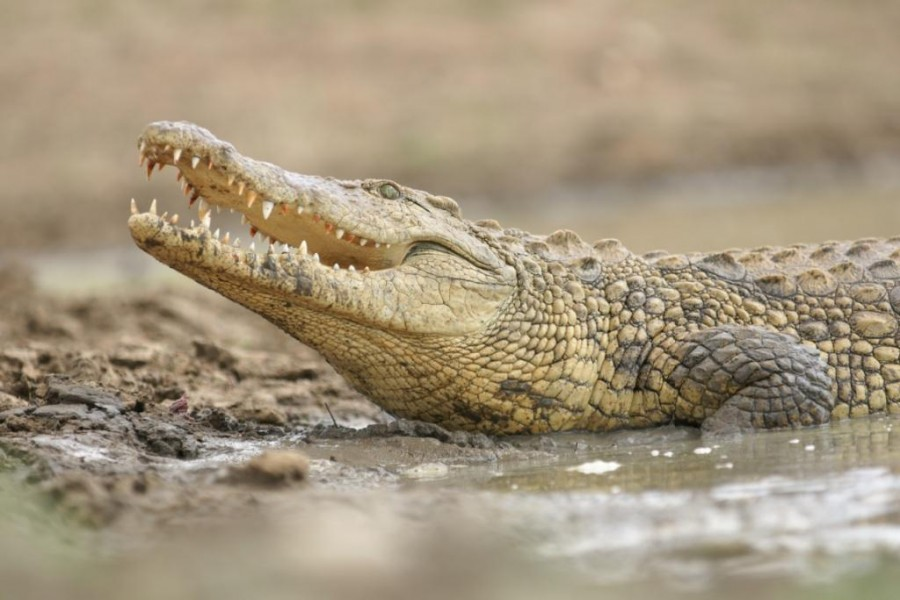
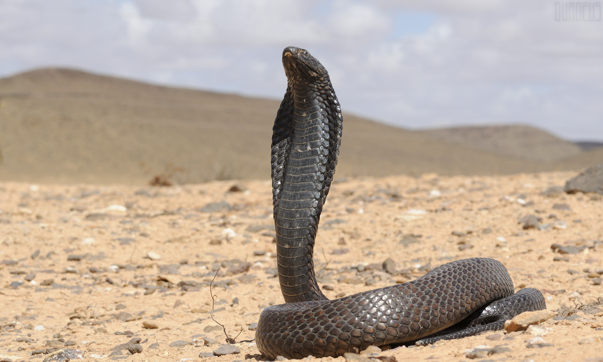
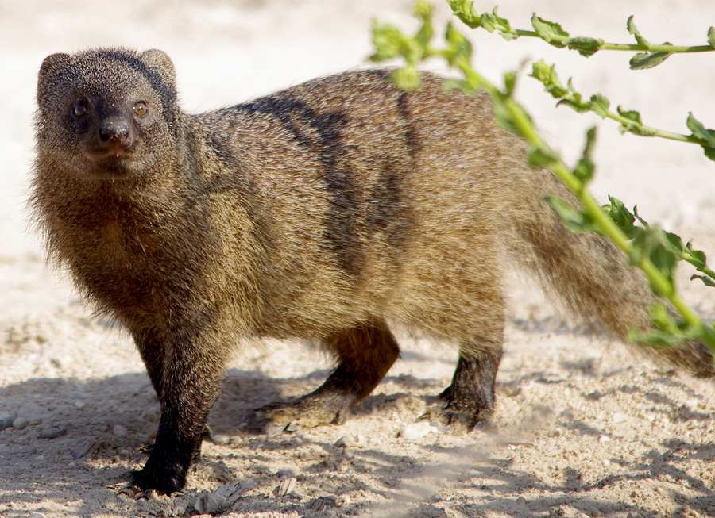
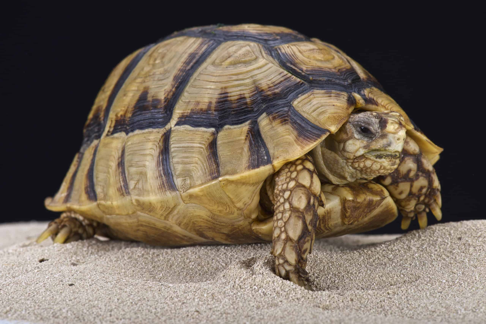
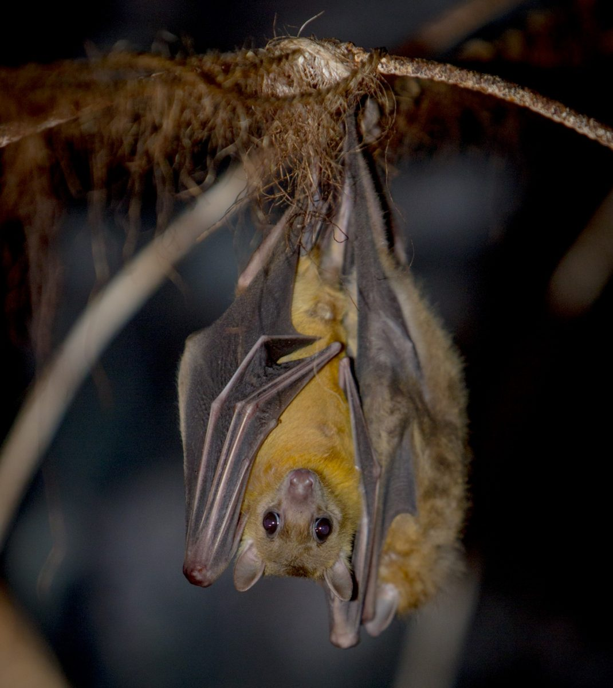

| Nile Crocodile (Crocodylus niloticus) |
Crocodylus niloticus |
Nile River, freshwater lakes, and marshes in Egypt |

|
| Egyptian Cobra (Naja haje) |
Naja haje |
Deserts, rocky areas, and cultivated lands in Egypt |

|
| Egyptian Mongoose (Herpestes ichneumon) |
Herpestes ichneumon |
Wetlands, marshes, and agricultural areas in Egypt |

|
| Egyptian Tortoise (Testudo kleinmanni) |
Testudo kleinmanni |
Sandy deserts and arid regions in Egypt |

|
| Egyptian Fruit Bat (Rousettus aegyptiacus) |
Rousettus aegyptiacus |
Caves, ruins, and rocky habitats in Egypt |

|